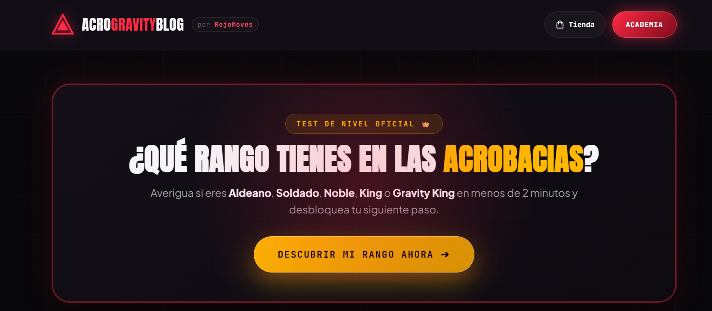
AcroGravity
01Una web que transforma el interés por las acrobacias en nuevos alumnos. Estrategia, copy, diseño y desarrollo.
+10 nuevos alumnos con mensualidad el primer mesCREADOR INDEPENDIENTE & ESTRATEGA DIGITAL
PORTFOLIO — 2026Disponible para nuevos proyectos
Convierto la atención que gana tu marca en confianza, conversaciones y crecimiento. Estrategia, contenido y experiencias digitales que dan a las personas una razón para elegirte.
Una persona. Estrategia, ejecución y responsabilidad.
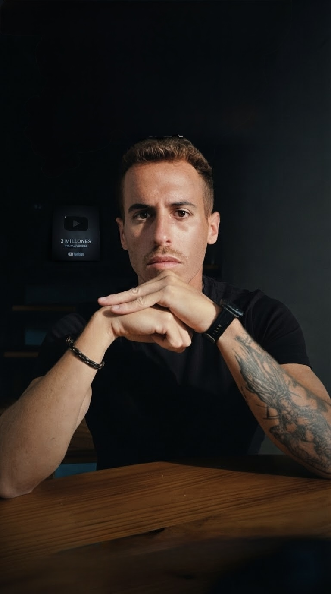
NO ES UN DOSSIER. ES TRABAJO CONSTRUIDO Y PROBADO EN EL MUNDO REAL.
01 /TRABAJOS SELECCIONADOS
Webs, herramientas y comunidades. Distintos formatos, una misma intención: hacer que las cosas pasen.

Una web que transforma el interés por las acrobacias en nuevos alumnos. Estrategia, copy, diseño y desarrollo.
+10 nuevos alumnos con mensualidad el primer mes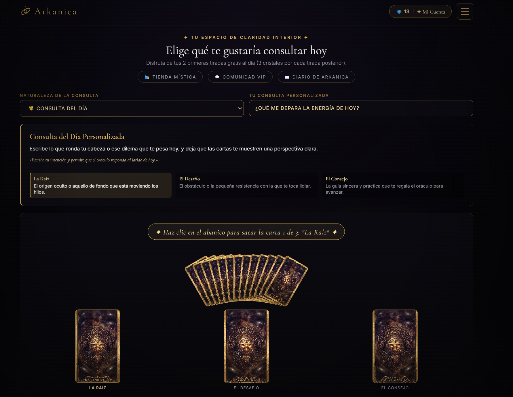
De una idea a una aplicación web. Arquitectura de producto, identidad visual y desarrollo completo.
Diseño de producto · Desarrollo · Lanzamiento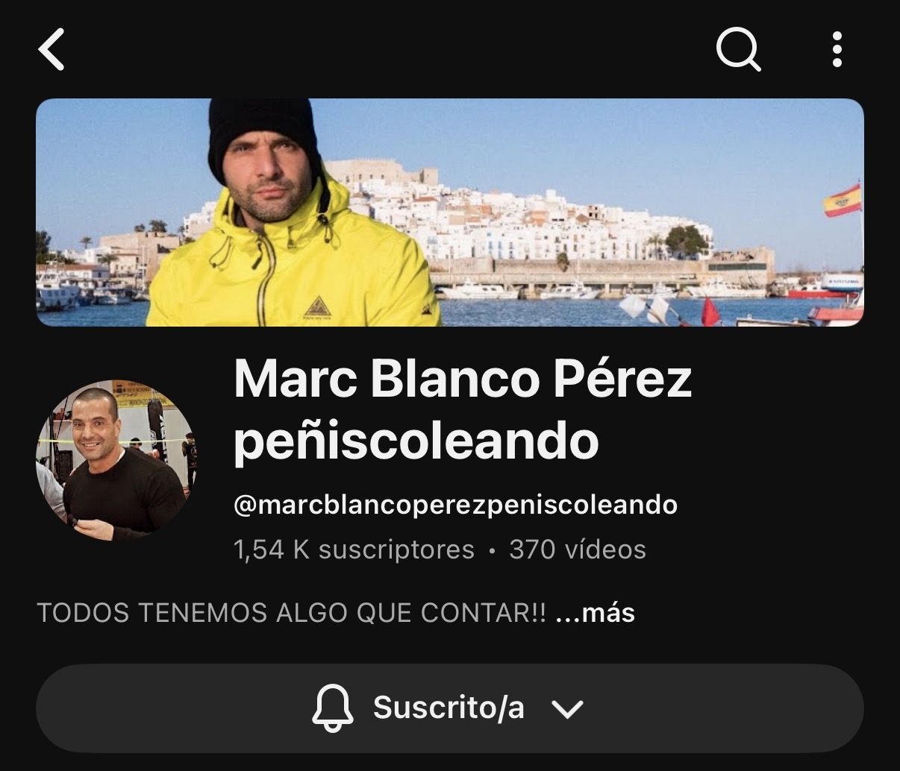
Un episodio, muchas formas de llegar. Estrategia editorial, producción y clips para el podcast de Marc Blanco Pérez.
Estrategia editorial · Edición · Distribución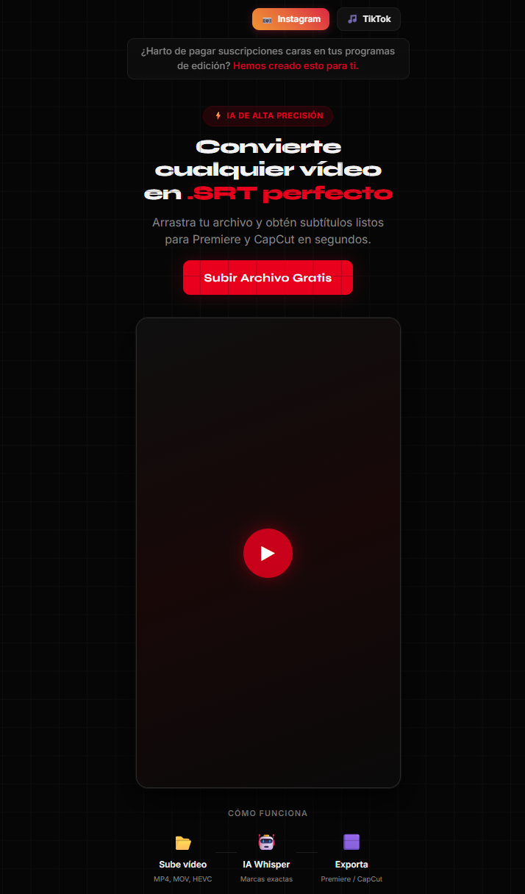
Una herramienta nacida de una necesidad real: convertir audio y vídeo en subtítulos y simplificar el flujo de edición.
Automatización · UX/UI · Desarrollo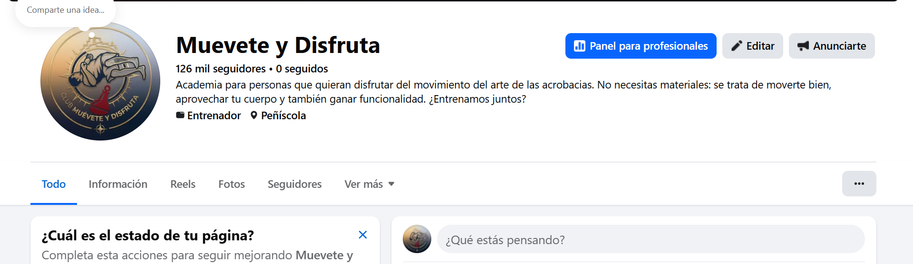
Una comunidad en Facebook construida con una estrategia de contenido constante y sin inversión publicitaria.
+120K seguidores con crecimiento orgánico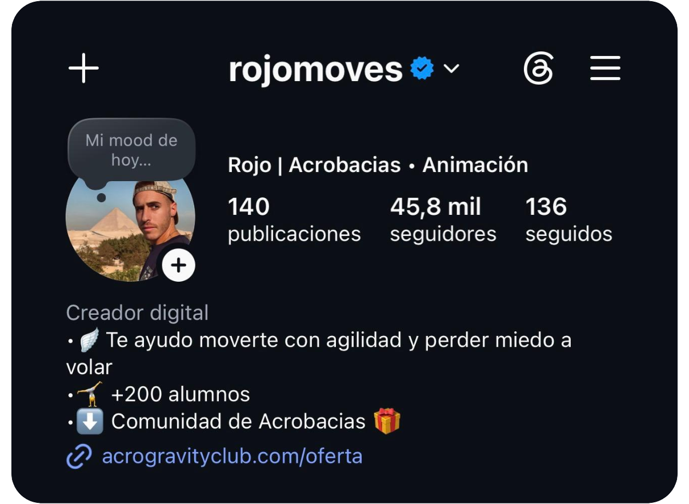
Mi propio campo de pruebas. Ocho años conectando contenido, marca personal y comunidad en cuatro plataformas.
545K+ seguidores totales en 4 plataformasTu proyecto podría ser el próximo en estar aquí.
Lo construimos juntos02 /EXPERIENCIA EN NÚMEROS
He construido mis propias audiencias desde cero. Estas son las comunidades donde pongo en práctica mis estrategias de contenido.
seguidores orgánicos
suscriptores
seguidores
personas en la comunidad
Las capturas detrás de los números
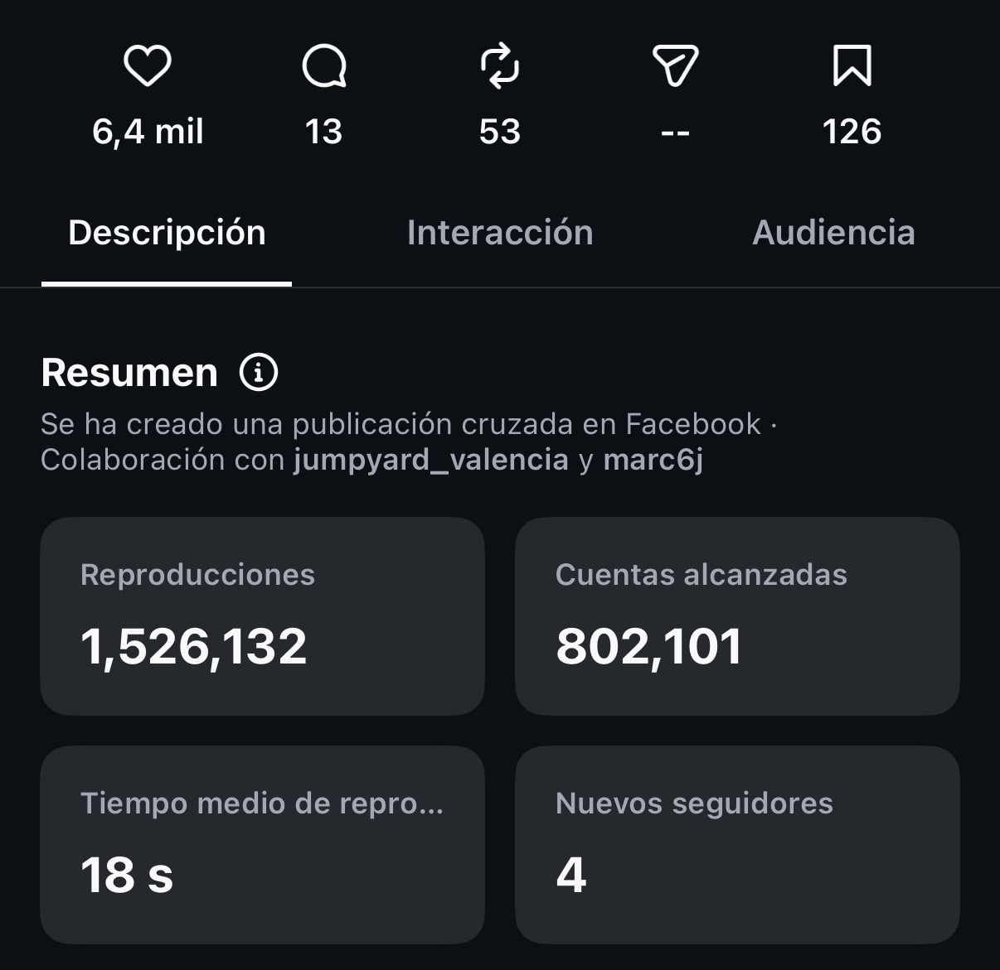
1,5M visualizaciones orgánicas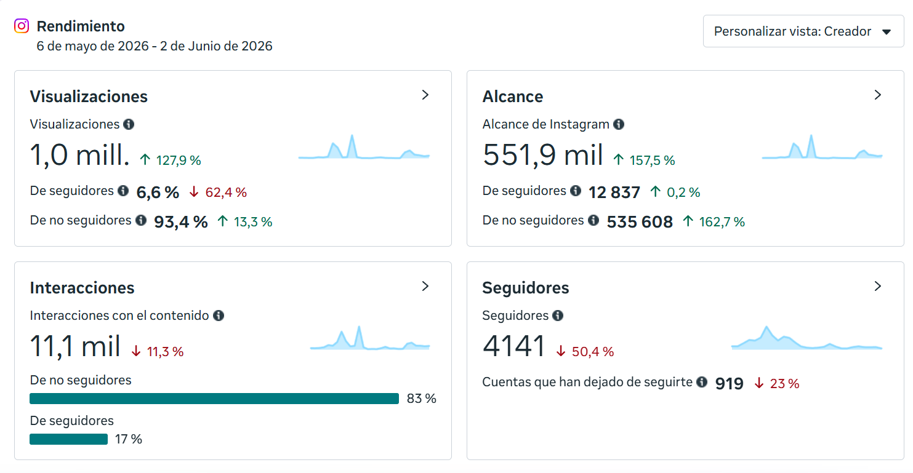
Instagram · Métricas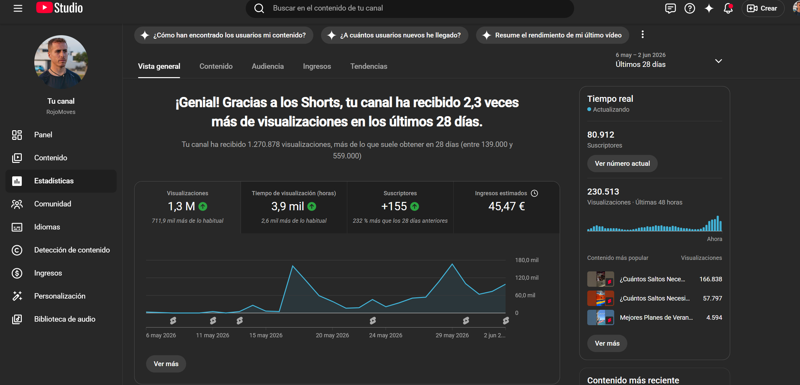
YouTube · Métricas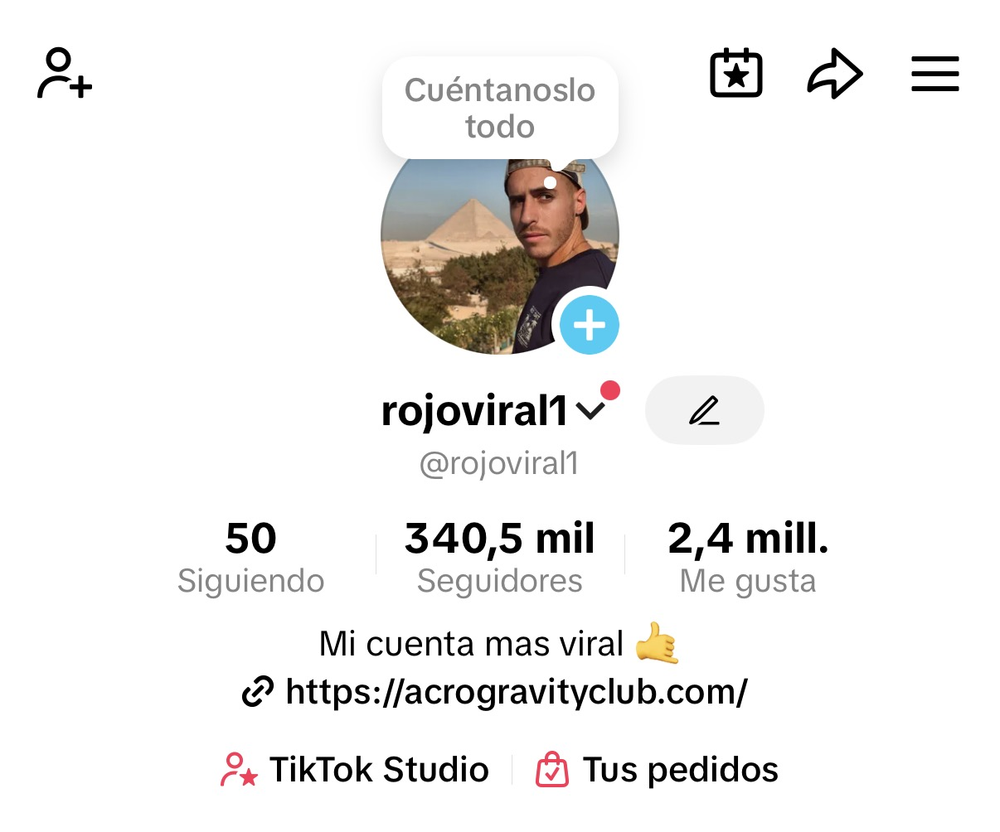
TikTok · Crecimiento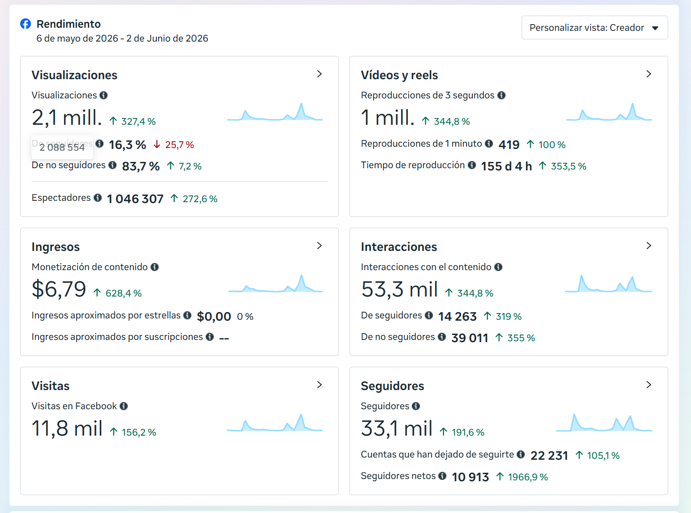
Facebook · Métricas Muévete y Disfruta RojoMoves · Marca personal Podcast Peñiscoleando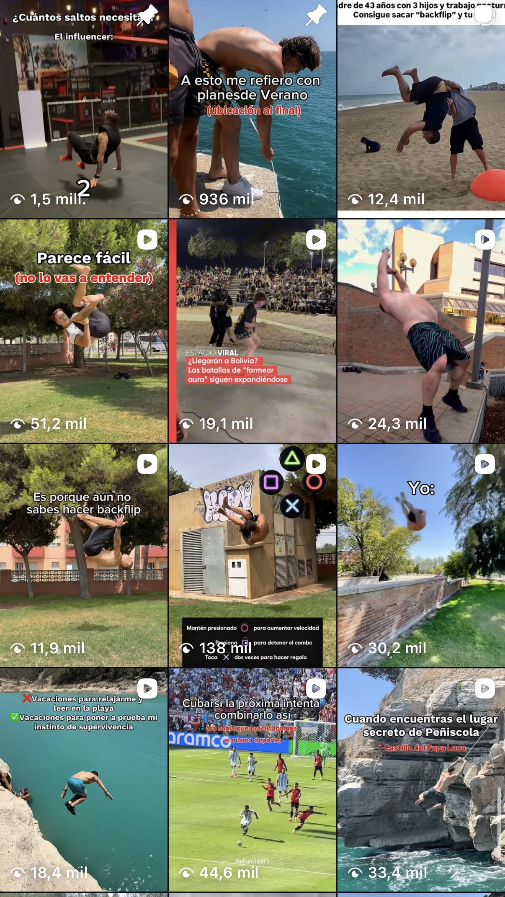
Contenido recienteCifras de mis canales propios recogidas en el portfolio. Explora cada captura para ver su contexto y plataforma.
03 /EN QUÉ PUEDO AYUDARTE
Elige el punto de partida que necesita tu negocio. Yo conecto las piezas, desde la estrategia hasta el lanzamiento.
Para negocios que necesitan convertir visitas en consultas. Un mensaje claro, diseño con intención y un camino sencillo al contacto.
Para marcas y creadores que quieren una dirección clara. Un sistema de contenido para construir comunidad y ganarte su confianza.
Para ideas que necesitan convertirse en producto y tareas repetitivas que piden una solución mejor. Tecnología al servicio de tu trabajo.
04 /SISTEMAS, NO IDEAS SUELTAS
Una pieza bonita no basta si tu equipo no puede repetirla. Estos son sistemas prácticos que construyo para que la estrategia sirva cada semana, no solo el día del lanzamiento.
Convierte una estrategia clara en 15 a 35 reels semanales, pensados para grabarse en una sola sesión.
Explorar el sistema 02 / IA + VENTAUn motor de cinco skills que transforma material real del negocio en historias diarias y secuencias de venta intencionales.
Ver cómo funciona 03 / IA + VOZUn sistema operativo de contenido que protege tu voz y hace que cada idea sea más afilada comercialmente.
Descubrir el marcoEl objetivo no es depender de un creador. Es salir con una forma de trabajar que sigue acumulando valor.
Construyamos tu sistema05 /QUIÉN ESTÁ DETRÁS
Llevo ocho años creando contenido, construyendo comunidades y lanzando proyectos digitales. He aprendido haciendo: publicando, midiendo, ajustando y volviendo a empezar.
Hoy llevo esa experiencia a marcas y negocios que quieren avanzar. Trabajas directamente conmigo: la persona que piensa la estrategia también es quien la lleva a la práctica.
Me encuentras en @sergio.creatorTu negocio, tu audiencia y qué quieres conseguir. Lo primero es escuchar.
Una propuesta con alcance, entregables y tiempos claros antes de empezar.
Diseño, contenido y desarrollo, con puntos de revisión para avanzar juntos.
Lanzamos, revisamos los resultados y detectamos qué optimizar después.
06 /TU PRÓXIMO PROYECTO EMPIEZA AQUÍ
Cuéntame qué está atascado, qué quieres cambiar y a dónde quieres llegar. La primera conversación sirve para encontrar el siguiente paso con más valor.
¿Qué desbloquearía más valor ahora?
Empezar la conversación en WhatsAppHablas directamente conmigo. Sin llamada comercial, sin compromiso.
{kind=link}
{kind=link}
{kind=link}
{kind=link}
{kind=link}
{kind=link}
{kind=link}
{kind=link}
{kind=link}